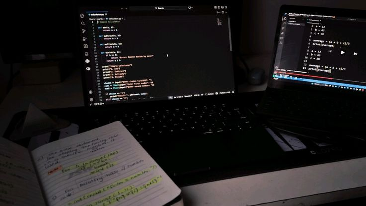

Tentang Saya
Alya Choirunnisa
Siswa PKL Divisi Front-End Developer
Jurusan: Rekayasa Perangkat Lunak
Sekolah: SMK MUHAMMADIYAH 6 ROGOJAMPI
Pertama kali saya daftar ke sekolah ini, tidak pernah terlintas di pikiran saya bahwa
saya akan masuk ke bidang IT dan menjadi anak RPL. Saat memilih jurusan ini pun
saya masih belum mengetahui apapun tentang dunia IT, saat itu saya masuk jurusan RPL
dengan sedikit sekali pengetahuan tentang komputer dan teknologi. Awalnya saya memang kesusahan
dan merasa tertinggal jauh dengan teman-teman saya yang sudah paham tentang jurusan yang mereka pilih...
Tapi alhamdulillah setelah terus belajar dan mencoba, saya bisa menyusul kemampuan teman-teman saya yang lain.
Karena itu semua, saya menekankan pada diri saya, bahwa sesuatu yang belum kita coba tidak tentu semenakutkan
seperti apa yang ada di dalam pikiran kita selama ini.
